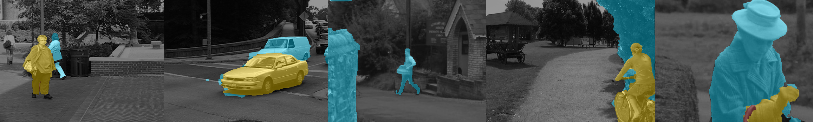

Causal Video Object Segmentation from Persistence of Occlusions
Abstract
Occlusion relations inform the partition of the image domain into "objects" but are difficult to determine from a single image or short-baseline video. We show how long-term occlusion relations can be robustly inferred from video, and used within a convex optimization framework to segment the image domain into regions. We highlight the challenges in determining these occluder/occluded relations and ensuring regions remain temporally consistent, propose strategies to overcome them, and introduce an efficient numerical scheme to perform the partition directly on the pixel grid, without the need for superpixelization or other preprocessing steps.
Sample Outcomes
{kind=link}
Depth-layer output of our scheme (larger values indicate increasing proximity to the viewer): background c(x)=0 (gray) and foreground layers c(x)=1, c(x)=2, c(x)=3 indicated by the colors , , respectively. On the far right, our algorithm correctly infers that the bag strap is in front of the woman's arm, which is in front of her trunk, which is in front of the background.
Overview
The following video describes our approach at a high-level, detailing each of the cues we leverage to produce our temporally consistent results, and illustrates the results of our method applied to a number of videos.Framework
The figure below summarizes our pipeline. Input video and optical flow are used to extract local ordering constraints from occlusions detected in the current frame. Combined with temporal consistency priors (foreground prior, persistent layer boundaries, and aggregated occlusion constraints) from past frames, these cues feed a global optimization problem that partitions the image domain into coarse depth layers, the connected components of which yield "objects". The result is a temporally consistent object segmentation over the course of the video. The method operates causally, allowing it to scale to long or even streaming videos, provides both object labels and depth layer labels, solves this problem efficiently directly on the pixel-grid, and requires no training step for detecting objects.{kind=link}
Code 
Our MATLAB implementation is available on github. We evaluated our approach on video sequences from MOSEG [1] and Berkeley Video Segmentation [2]. Installation instructions are provided in the README, which explains that only vlfeat is needed in addition to the provided code. The demo.m script runs our framework on an example sequence (cars5) from the MOSEG [1] dataset, which is downloaded by the script if needed. To run it, start MATLAB and run "demo".
If you use this work in your research, please cite our paper:
- Causal Video Object Segmentation from Persistence of Occlusions
B. Taylor, V. Karasev, and S. Soatto
In CVPR, 2015. (paper, technical report, poster, abstract)
References
- T. Brox and J. Malik. Object segmentation by long term analysis of point trajectories. In ECCV, 2010
- P. Sundberg, T. Brox, M. Maire, P. Arbelaez, and J. Malik. Occlusion boundary detection and figure/ground assignment from optical flow. In CVPR, 2011.
If you have any questions, please contact Brian Taylor and/or Vasiliy Karasev.